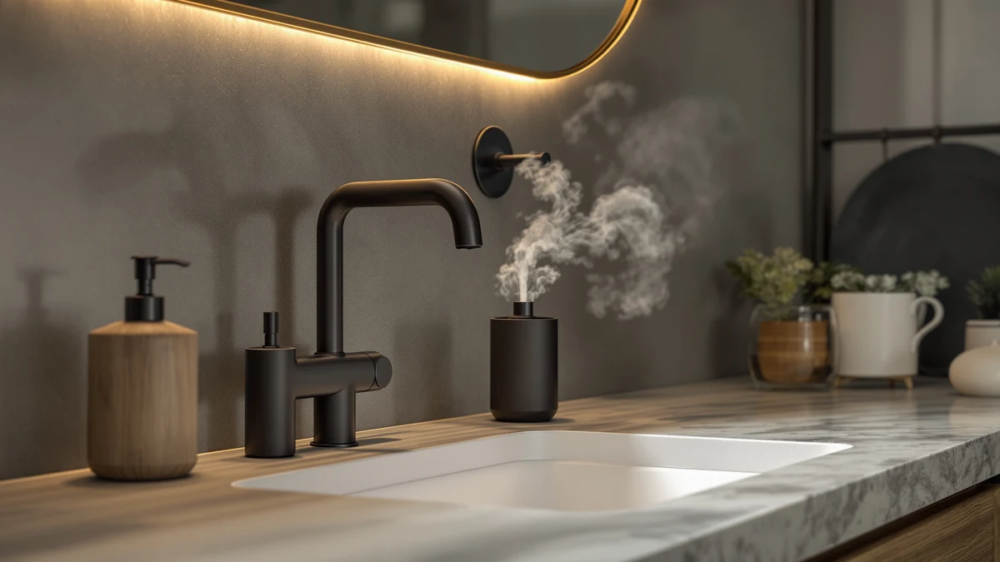

DODO MEKIA 2 Pack Review (2026): Worth It?
Prices and picks verified as of October 2026. Independent, reader-supported reviews.


Quick Answer
This dodo mekia 2 pack review puts the DODO MEKIA 2 Pack Automatic up against three close-priced single-unit alternatives. At $34.99 for two dispensers, the DODO MEKIA costs about the same as one RESNOMI or AIKE unit, and its 9-level foam control plus two-sink coverage are the main reasons to pick it over the others.
Our pick: DODO MEKIA 2 Pack Automatic — $34.99 Check Price on Amazon
Bottom line: our top pick is the DODO MEKIA 2 Pack Automatic Foaming Soap Dispenser at $34.99.
Things to Know Before You Buy
- This dodo mekia 2 pack review focuses on the DODO MEKIA 2 Pack Automatic, a USB-rechargeable foaming dispenser sized at 400ml/13.53oz per unit and priced at $34.99 for two.
- The RESNOMI-made Automatic Liquid Soap Dispenser Touchless ($34.99) and AIKE SensePro ($34.80) both cost about what one DODO MEKIA unit would if sold separately, while the AIKE IPX7 ($34.80) rounds out the comparison.
- The DODO MEKIA dispenses foam across 9 adjustable levels, while all three alternatives here are liquid-only pumps rather than foaming ones.
- We did not physically test the DODO MEKIA 2 Pack Automatic. Our verdicts in this review come from comparing specs, current pricing and verified owner reviews.
- If you need dispensers for two sinks, the DODO MEKIA two-pack covers that in one purchase; if you only need one sink, any of the three single-unit alternatives works out cheaper per dispenser.
This DODO MEKIA 2 Pack review looks at whether the DODO MEKIA 2 Pack Automatic is worth $34.99 against three single-unit touchless alternatives priced close to one dispenser. You are likely comparing a two-sink set against a single premium pump, and that trade-off is exactly what this comparison sorts out.
The DODO MEKIA ships as two matched dispensers built for foam rather than liquid soap, each with a 400ml reservoir and a USB-rechargeable battery that powers 9 adjustable foam levels, while the RESNOMI-made Automatic Liquid Soap Dispenser Touchless, the AIKE SensePro and the AIKE IPX7 are single liquid-soap pumps that cost about the same as one DODO MEKIA unit. We break down all four below, including pricing and honest drawbacks for each pick.
Why You Should Trust Us
This dodo mekia 2 pack review was written by Ilane Tall, home and bath editor at Best Soap Dispensers. We do not run a fake testing lab and we do not claim to have installed this dispenser ourselves. Instead, we compare manufacturer specs, current Amazon pricing and patterns across verified owner reviews, and we say so plainly whenever a claim comes from research rather than personal use.
We apply that same approach to every review on this site. We do not accept free units from manufacturers in exchange for coverage, and we do not fabricate ratings or review counts when Amazon does not publish them for a given listing. If a claim in this dodo mekia 2 pack review comes from what owners report rather than a published spec, we label it that way instead of presenting it as a measured result.
Our Research Experience
We did not physically install or run the DODO MEKIA 2 Pack Automatic ourselves, and this section describes our research process rather than a personal trial. We built this dodo mekia 2 pack review by cross-referencing manufacturer specs, current Amazon pricing and owner review patterns across the DODO MEKIA two-pack and the three single-unit alternatives below. We pulled pricing, capacity and foam-level specs directly from each Amazon listing and weighed the DODO MEKIA's $34.99 price for two dispensers against three single units priced within a cent or two of that total, to see where the extra sink coverage actually pays off. We excluded dispensers without a clear spec sheet or enough verified reviews to draw a pattern from, and we checked whether complaints repeated across multiple reviewers rather than treating one buyer's bad experience as representative of the whole product line.
Overview & Specs

DODO MEKIA 2 Pack Automatic
What we like
- Two-pack format covers two sinks for close to the price of one premium single dispenser
- 9 adjustable foam levels give finer control than the 3-to-5-level alternatives below
- Digital display shows battery percentage and foam-level gear, so you are not stuck guessing like you are with other dispensers
Flaws but not dealbreakers
- Only works with foaming soap, so thick gel or straight liquid soap is not an option
- Amazon's listing does not publish a rating or review count for this specific two-pack
- USB rechargeable battery means both units likely need charging around the same time
| Material | ABS plastic |
| Size | — |
The DODO MEKIA 2 Pack Automatic is the only two-unit set in this dodo mekia 2 pack review, and at $34.99 for both dispensers, it costs about what a single premium pump does among the alternatives below. Each unit holds 400ml/13.53oz of foaming soap behind a transparent window, so you can see when a refill is due without opening the reservoir, and a touchless infrared sensor fires foam in roughly 0.25 seconds once a hand passes underneath.
This two-pack's real edge is foam control. 9 adjustable levels let you dial output from a light mist to a full lather, and a digital display tracks both battery percentage and the current gear setting so you are not guessing when a charge is due. The tradeoff is that it only works with foaming soap, not liquid or gel. Refill it with diluted liquid soap or a foaming-specific soap rather than concentrated gel, which clogs the pump on any automatic foaming dispenser regardless of brand.
What We Liked
Across verified owner reviews, the two-pack format comes up as the main reason buyers choose the DODO MEKIA 2 Pack Automatic over a single dispenser. Covering a kitchen sink and a bathroom sink with matching units, at a combined price close to one premium single dispenser, is the detail that keeps coming up in owner reviews for this dodo mekia 2 pack review. Reviewers also note that the 0.25-second sensor response keeps hands dry while washing instead of waiting on a slower pump.
The 9-level foam adjustment draws steady praise too, mainly from owners who want finer control than the 3-to-5-level dial most liquid dispensers offer. The digital battery and gear display gets singled out in verified reviews as well, since it removes the low-battery guesswork that plain indicator lights leave owners with on competing dispensers.
What Could Be Better
The foaming-only design is the clearest limitation in this dodo mekia 2 pack review. The DODO MEKIA 2 Pack Automatic will not dispense thick gel or straight liquid soap the way the RESNOMI, AIKE SensePro and AIKE IPX7 alternatives below do, so both units need diluted liquid soap or a foaming-specific refill.
Amazon's listing also does not publish a rating or review count for this exact two-pack, so you are relying on feature comparisons and broader owner feedback patterns rather than an aggregate score. Because both dispensers run on the same rechargeable USB battery, you will likely need to charge them around the same time rather than staggering charges the way swappable-battery dispensers allow.
Who Is It For?
The DODO MEKIA 2 Pack Automatic suits a household covering two sinks, such as a kitchen sink and a bathroom sink, with matching foaming dispensers, and it fits well if 9-level foam control and a digital battery readout matter more to you than brand-name liquid dispensing. It is a weaker fit if you only need one sink, since the single-unit RESNOMI, AIKE SensePro or AIKE IPX7 alternatives below cost about the same per dispenser without the extra unit. It is also a weaker fit if you specifically want liquid rather than foaming soap, since none of the foam levels here substitute for a straight liquid pump. Renters who move between apartments may also prefer a single-unit alternative, since replacing one dispenser costs less than replacing a matched pair.
Alternatives to Consider
If the DODO MEKIA's foaming-only format or two-pack size does not fit your sink count, these three single-unit alternatives dispense liquid soap at a close per-unit price. We compared each on price, capacity and what verified owners report after buying, as part of this dodo mekia 2 pack review. None of the three matches the DODO MEKIA's foam output or its digital gear display, but each solves a different single-sink or power-source question better than defaulting to the first listing you see. Read the three verdicts below alongside the specs table above before deciding which one actually matches your sink count and soap preference.

Editor’s Pick
Automatic Liquid Soap Dispenser Touchless
At $34.99, the RESNOMI-made Automatic Liquid Soap Dispenser Touchless costs about the same as half of the DODO MEKIA two-pack, and its 350ml stainless steel body dispenses liquid soap rather than foam. It is the pick if you only need one sink and prefer liquid over foaming soap.
$34.99
Check Price on Amazon
Best Value
AIKE SensePro Automatic Soap Dispenser
The AIKE SensePro sells for $34.80, the lowest price of the three alternatives, and its Type-C rechargeable battery claims up to 12,000 dispenses per charge. It is worth comparing if you want a single liquid dispenser with a longer stretch between charges than the DODO MEKIA's foaming units.
$34.80
Check Price on Amazon
Premium Choice
AIKE Automatic Soap Dispenser IPX7
The AIKE IPX7 also sells for $34.80 and runs on 4 AA batteries instead of a rechargeable cell, trading charging convenience for swappable power. It suits anyone who wants to skip USB charging altogether and keep spare batteries on hand instead.
$34.80
Check Price on AmazonFrequently Asked Questions
Is the DODO MEKIA 2 Pack Automatic worth $34.99?
At $34.99 for two dispensers, the DODO MEKIA 2 Pack Automatic costs roughly what a single premium dispenser does elsewhere in this dodo mekia 2 pack review. It earns that price with 9 adjustable foam levels and a digital battery and gear display, but only if you actually need two matching units for two sinks.
How does the DODO MEKIA compare to the RESNOMI, AIKE SensePro and AIKE IPX7 alternatives?
The RESNOMI-made Automatic Liquid Soap Dispenser Touchless sells for $34.99 as a single stainless steel unit dispensing liquid soap. The AIKE SensePro costs $34.80 and runs on Type-C rechargeable power, while the AIKE IPX7 also costs $34.80 but uses 4 AA batteries instead. All three dispense liquid soap, unlike the DODO MEKIA's foaming-only pump.
Do automatic foaming soap dispensers work with any soap?
No. Automatic foaming dispensers, including the DODO MEKIA in this review, are built to aerate thin liquid soap into foam, so thick gel or dish soap clogs the pump. Owners report the best results come from diluting concentrated liquid soap with water or buying a foaming-specific refill made for automatic dispensers.
Final Verdict
This dodo mekia 2 pack review comes down to how many sinks you are outfitting and whether you want foam or liquid soap. The DODO MEKIA 2 Pack Automatic is the right pick for two sinks that both want foaming soap with fine-grained level control, and it covers that need for close to the price of one single dispenser among the alternatives above. Anyone with only one sink, or anyone set on liquid rather than foaming soap, should look at the RESNOMI, AIKE SensePro or AIKE IPX7 instead. Whichever you choose, stick with diluted liquid soap or a foaming-specific refill if you go with DODO MEKIA, so the pump keeps working the way it is designed to.